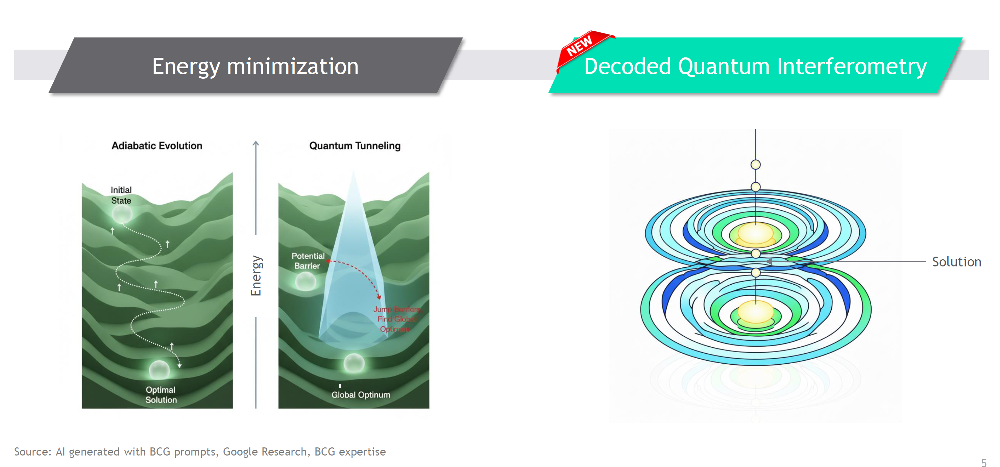
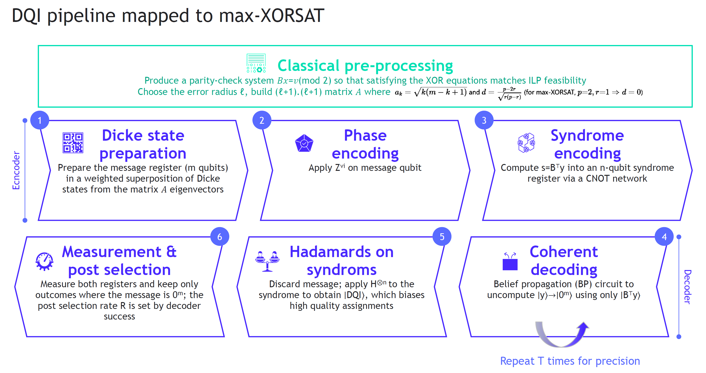
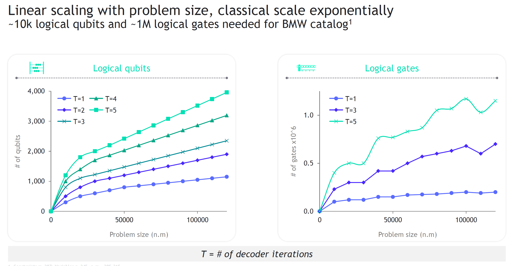
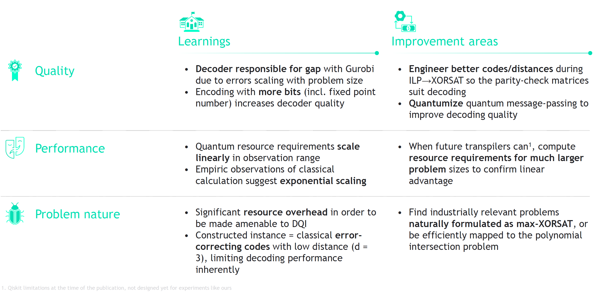

End-to-end Qiskit implementation of Decoded Quantum Interferometry (DQI) applied to industrial integer linear programs (ILPs), with a focus on automotive option-packaging problems.
This repository accompanies the paper “Towards Solving Industrial Integer Linear Programs with Decoded Quantum Interferometry” (arXiv:2509.08328). It provides a full quantum-circuit realization of DQI, including a quantum version of belief propagation for decoding LDPC codes, and a pipeline that maps ILPs to MAX-XORSAT instances suitable for DQI-based optimization.
DQI uses quantum interference to bias sampling toward high-value solutions and reframes the optimization problem as a decoding task over sparse parity-check codes. In this implementation, decoding is performed coherently on the quantum state via a quantum binary belief-propagation decoder before measurement.

This project demonstrates how DQI, combined with a quantum belief-propagation decoder, can be used to tackle real-world combinatorial optimization tasks derived from ILPs, such as packaging problems for automotive configurations. The code supports:
We recommend using a dedicated conda environment:
conda create -n dqi_env python=3.11
conda activate dqi_env
pip install -r requirements.txt
Optional: if GPUs are available, you can upgrade JAX to a CUDA-enabled build, for example:
pip install --upgrade "jax[cuda12]"
Some experiment scripts (e.g. experiment_empirical_vs_analytic.py,
experiment_performance_resources.py) contain a commented line
os.environ["CUDA_VISIBLE_DEVICES"] = "0" that can be uncommented to target a specific GPU.
The implementation maps the DQI methodology into a full pipeline using Qiskit. It combines problem encoding, DQI state preparation, coherent quantum belief-propagation decoding, interference, measurement, and classical post-processing.

All numerical experiments from the paper are implemented as Python modules under the
pipelines directory. To reproduce them, run:
python -m pipelines.experiment_empirical_vs_analytic
python -m pipelines.experiment_histogram_small_max_xorsat
python -m pipelines.experiment_performance_resources
python -m pipelines.experiment_success_rates_2d_plots
Each script generates data (e.g. success rates, histograms, resource estimates) and plots that correspond to the figures and analyses in the paper.
The repository also includes tools to generate synthetic automotive data and build ILP instances that can be fed into the DQI pipeline.
1) Vehicle generation
python synthetic_data_generation/generate_vehicles.py \
-N 1000 \
--input_dir synthetic_data_generation/data \
--output_file synthetic_data_generation/data/test_vehicles.csv
2) Take-rate data building
python synthetic_data_generation/build_package_take_rate_data.py \
--families_file synthetic_data_generation/data/families.csv \
--options_file synthetic_data_generation/data/options.csv \
--vehicles_file synthetic_data_generation/data/test_vehicles.csv \
--template_file synthetic_data_generation/package_templates.yaml \
--output_file pipelines/data/take_rates.parquet \
--output_format parquet
3) Creating an ILP instance
python pipelines/compute_milp_formulation.py
This produces an ILP instance (stored, for example, in pipeline/data/milp_formulation.json)
that can subsequently be converted to MAX-XORSAT and used in the DQI experiments.
The implementation is used to study how DQI-based decoding behaves as problem sizes grow, both on realistically sized industrial instances and on controlled synthetic benchmarks. The experiments explore solution quality, success rates, and quantum resource requirements across different decoding depths and decoder variants.


To reproduce one of the core experiments from the paper (for example, comparing empirical quantum simulations with analytic predictions), run:
python -m pipelines.experiment_empirical_vs_analytic
Other experiments can be invoked analogously by replacing the module name, e.g.
experiment_histogram_small_max_xorsat,
experiment_performance_resources, or
experiment_success_rates_2d_plots.
This project is released under the Apache-2.0 License.
Francesc Sabater, Ouns El Harzli, Geert-Jan Besjes, Marvin Erdmann, Johannes Klepsch, Jonas Hiltrop, Jean-François Bobier, Yudong Cao, and Carlos A. Riofrío.
Francesc Sabater, Ouns El Harzli, Geert-Jan Besjes, Marvin Erdmann, Johannes Klepsch, Jonas Hiltrop, Jean-François Bobier, Yudong Cao, and Carlos A. Riofrío. “Towards Solving Industrial Integer Linear Programs with Decoded Quantum Interferometry.” arXiv preprint arXiv:2509.08328, 2025.
Last updated: